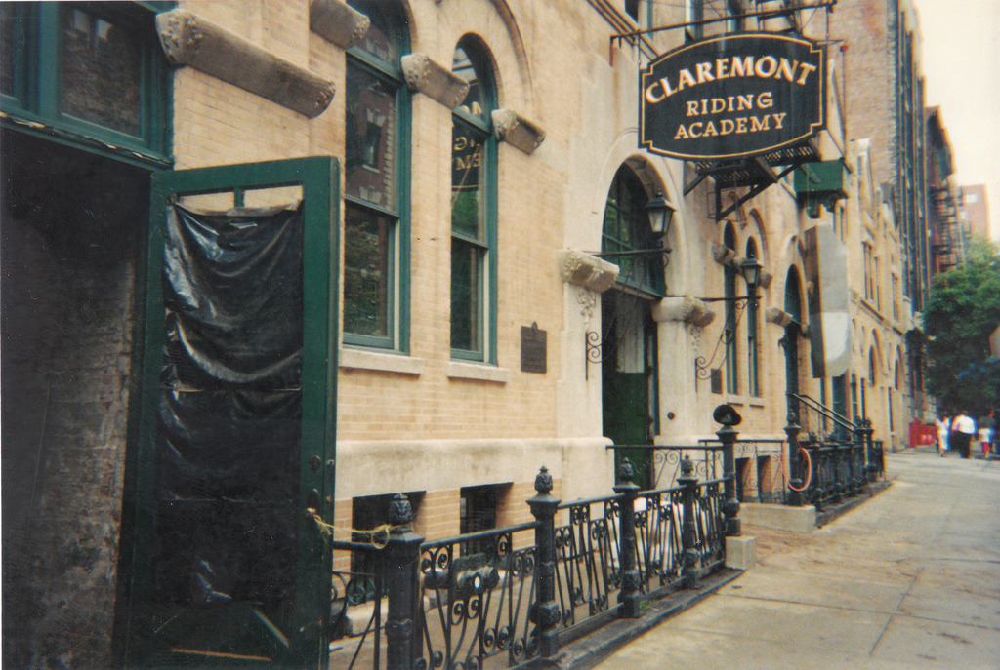

So, on 89th Street, between Amsterdam and Columbus – a fairly impoverished block in the 1970s, and rife with muggers and drug dealers (I happened to know of one or two of each – the muggers, well, they mugged me, and the dealers, well, that was strictly for sociological research purposes) – there was this little gem of privilege: The Claremont Riding Academy. Actually, it was as un-upper-crusty as a riding academy could be, but still its existence on 89th Street was a real anomaly.